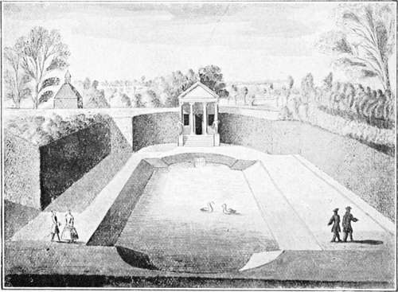

Landscape Gardening. Part 5
Description
This section is from the book "A History Of Gardening In England", by Alicia Amherst. Also available from Amazon: A History Of Gardening In England.
Landscape Gardening. Part 5
When asked to make suggestions for the improvement of a place, Repton prepared what he called his " Red Book," with plans and views of the garden as it was, and as he proposed to make it. He published a collection of these " Red Books," amplifying it with expositions of his own views on landscape gardens. The best way to understand what these views were, is by a study of these " Red Books," many of which are still unpublished. The above illustrations are taken from his MS. " Red Book," of Woodford, in Essex.* The first sketch in the book represents the house as it was, viewed from the grounds, "with the kitchen-garden on the one side, and the naked village on the other. That the former ought to be removed, and the latter planted out, are such obvious improvements that I do not take upon myself the merit of suggesting them." The second view shows the place as it would be when these designs were carried out. The further alterations were chiefly made to gain a more pleasing view from the house, the planting and turfing of a ploughed field, and the " floating the bottom of the lawn with water." Repton was not the last of this school to admire and extol Brown, some few still spoke of him in glowing terms :—
* MS. "Red Book" by Repton, 1793, belonging to Miss Mackworth Dolben, Finedon, Northamptonshire.
" Born to grace Nature, and her works complete With all that's beautiful, sublime and great, For him each Muse enwreathes the laurel crown, And consecrates to Fame immortal Brown." †
As late as T835 Dennis refers to him as a great "improver of English taste." ‡ This author also bestows praise on some changes that Brown himself might have been proud of, if his achievements were measured by the amount he swept away. He speaks of the alterations in St. James's Park as " the best obliteration of avenues" that "has been effected . . . but it has involved a tremendous destruction of fine elms. Certainly considerable credit redounds to the projector of these improvements for astounding ingenuity in converting a Dutch Canal into a fine flowing river, with incurvated banks, terminated at one end by a planted island, and at the other by a peninsula." This was "planned and executed" by Eyton. The grounds of Buckingham Palace were about this time laid out by William Aiton the younger, son of the author of Hortus Kewensis, the royal gardener at Kensington and Kew. Davis was another landscape gardener of this school, said by his contemporaries to have " displayed considerable taste," especially in the alterations he carried out at Longleat. The two views of Narford show how complete the change from a formal to a landscape garden can be. The cascade pond was sketched between 1716 and 1724 by Edmond Prideaux, of Prideaux in Cornwall, when on a tour in Norfolk. The second view is from a photograph taken in 1894 from as nearly as possible the same point of view. The lake which covers seventy acres was made about 1842, and all traces of the stiff pond have vanished.
* Reproduced from the original MS. belonging to Courtenay Warner, Fsq. † " The Rise and Progress of the Present Taste of Planting," an epistle to Charles Lord Viscount Irwin—1767. MS. in Guildhall Library. ‡ The Landscape Gardener. By J. Dennis, 1835.
Landscape gardening had by this time become the recognized National style of England, and it was copied on the Continent, in France, Italy and Germany. " English gardens " became the fashion, and books were written abroad to extol the English taste, and invite other nations to copy it,* and old gardens were destroyed to give place to the new style. But on the Continent one thing was lacking, which was the redeeming point in all these landscapes, and that was the green turf. Nowhere is the grass so fair and green as in England, and landscape-gardeners appreciated this great advantage.
It is strange the way in which the writers of this school pointed to Milton and Bacon as the founders of their taste.
They claimed Bacon because he devotes a part of his ideal garden to a "natural wildness," and also praises "green grass kept finely shorn," and Milton, because he says that in Paradise there were :—
" Flowers worthy of Paradise, which not nice art In beds and curious knots, but nature boon Poured forth profuse on hill, and dale, and plain." †.
Yet how opposed to all ideas of landscape gardeners would these two men have been. Bacon, who loved the green grass, and yet would have his garden full of flowers in bloom in every month of the year, would have been shocked by the idea of " a garden . . . disgracing by discordant character the contiguous lawn," or by being told that " the flower-garden ought never to be visible from the windows of the house." Sir Walter Scott,* in one of his charming articles on landscape gardening, points out that Milton never intended to censure the "trim gardens" of his own day, although he pictured the natural beauties in the newly-created Paradise. Scott well understood the great mistake that had been made in destroying such a large number of old gardens. He saw how perfectly an Elizabethan garden harmonized with the house, and while he could, not vindicate the " paltry imitations of the Dutch, who clipped yews into monsters," he acknowledged that there existed gardens, "the work of London and Wise, and such persons as laid out ground in the Dutch taste, which would be much better subjects for modification than for absolute destruction." He admired fine terraces, flights of steps, balustrades, and vases of gardens in the Italian style, and the fountains and waterworks of the French.
* Del' Arte del GiardiniInglesi, Milan, 1801, etc. † Paradise Lost—Book IV.
Narford. no. i. from A sketch by edmond prideaux about 1761.
Quarterly, Vol. 37, 1828, and Criticism, Vol. V.
Continue to: